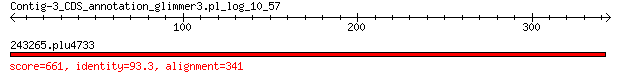

bitscore colors: <40, 40-50 , 50-80, 80-200, >200
 BLASTP 2.2.31+
Reference: Stephen F. Altschul, Thomas L. Madden, Alejandro A.
Schaffer, Jinghui Zhang, Zheng Zhang, Webb Miller, and David J.
Lipman (1997), "Gapped BLAST and PSI-BLAST: a new generation of
protein database search programs", Nucleic Acids Res. 25:3389-3402.
Reference for composition-based statistics: Alejandro A. Schaffer,
L. Aravind, Thomas L. Madden, Sergei Shavirin, John L. Spouge, Yuri
I. Wolf, Eugene V. Koonin, and Stephen F. Altschul (2001),
"Improving the accuracy of PSI-BLAST protein database searches with
composition-based statistics and other refinements", Nucleic Acids
Res. 29:2994-3005.
Database: eggnogv4.proteins.all.fa
14,875,530 sequences; 5,112,597,290 total letters
Query= Contig-3_CDS_annotation_glimmer3.pl_log_10_57
Length=344
Score E
Sequences producing significant alignments: (Bits) Value
243265.plu4733 661 0.0
> 243265.plu4733
Length=341
Score = 661 bits (1706), Expect = 0.0, Method: Compositional matrix adjust.
Identities = 318/341 (93%), Positives = 326/341 (96%), Gaps = 0/341 (0%)
Query 1 MLSLKEFNTFGLSAYAKRLDIAESAESLLTLWQKAKSEKQPALLLGGGSNVLFTANFEGT 60
MLSLKEFNTFGLSAYAKRLDIAESAESLL LWQKAKSEKQP LLLGGGSNVLFT NFEGT
Sbjct 1 MLSLKEFNTFGLSAYAKRLDIAESAESLLALWQKAKSEKQPVLLLGGGSNVLFTTNFEGT 60
Query 61 VILNRIMGIQQRETDESWHLHVGAGENWHKLVCRSLKNQIYGLENLALIPGCVGAAPIQN 120
VILNRIMGIQQRETDESWHLHVGAGENWH+LVC SLKNQIYGLENLALIPGC GAAPIQN
Sbjct 61 VILNRIMGIQQRETDESWHLHVGAGENWHELVCHSLKNQIYGLENLALIPGCSGAAPIQN 120
Query 121 IGAYGIEFRDVCEYVDVLNLETGEKTRLSVGECQFGYRDSVFKNKYKTNHSIISVGLLLK 180
IGAYGIEFRDVCEYVDVLNLETGE+TRLSVGECQF YRDS+FK+KYK NHSIISVGLLLK
Sbjct 121 IGAYGIEFRDVCEYVDVLNLETGEQTRLSVGECQFRYRDSIFKHKYKANHSIISVGLLLK 180
Query 181 KNWQPILNYGDLTRFSKDNVTPQQIFDSICAMRTSKLPDPVITGNAGSFFKNPIVSEEVA 240
KNWQPILNYG+LTR SKDNVTPQQIFDS+CAMRTSKLPDP ITGNAGSFFKNPIVS EVA
Sbjct 181 KNWQPILNYGNLTRLSKDNVTPQQIFDSVCAMRTSKLPDPAITGNAGSFFKNPIVSAEVA 240
Query 241 AKIRENYPDSPQYPYMNGMFKLAAGWLIEHCNLKGYRIGGASVHLRQALVLINQENATGK 300
AKI+ENYPDSPQY Y NGMFKLAA WLIE CNLKGYRIGGASVHLRQALVLINQENATGK
Sbjct 241 AKIKENYPDSPQYSYTNGMFKLAAAWLIERCNLKGYRIGGASVHLRQALVLINQENATGK 300
Query 301 DVVSLAAYIRQQVISKFGVLLEPEVRFIGSKGEIDAVECIS 341
DVV LAAYIR+QVISKFGVLLEPEVRFIGSKGEIDAVECIS
Sbjct 301 DVVLLAAYIRRQVISKFGVLLEPEVRFIGSKGEIDAVECIS 341
Lambda K H a alpha
0.319 0.137 0.410 0.792 4.96
Gapped
Lambda K H a alpha sigma
0.267 0.0410 0.140 1.90 42.6 43.6
Effective search space used: 618124710360